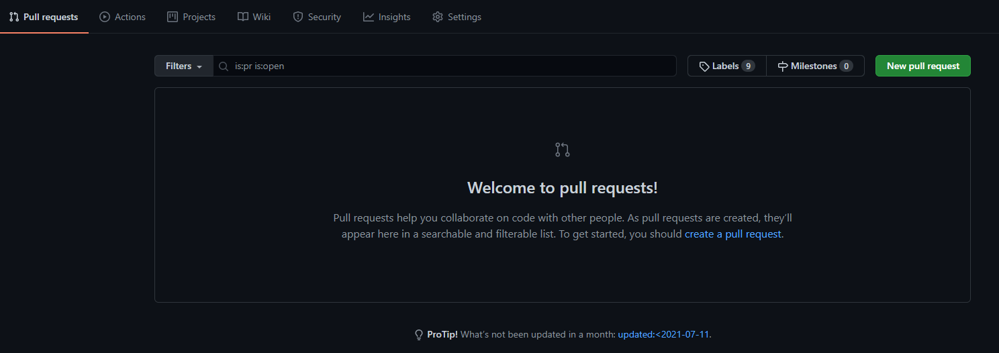
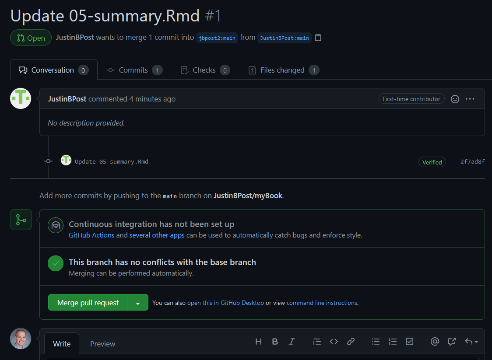
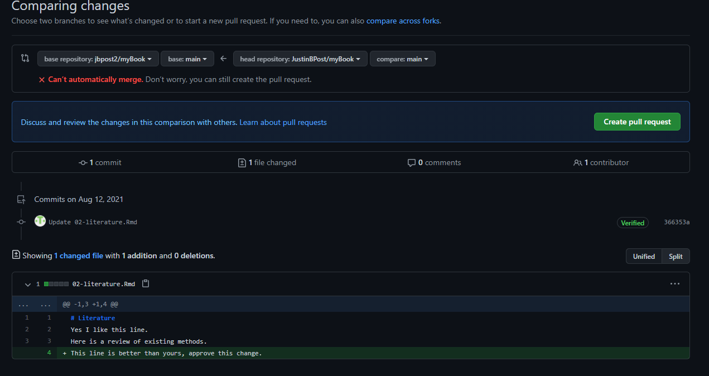
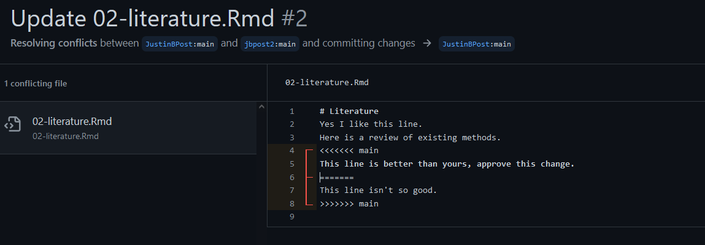

Git and GitHub
What do we want to be able to do?
Statistics & Data Science!
- Read in raw data and manipulate it
- Combine data sources
- Summarize data to glean insights
- Apply common analysis methods
- Communicate Effectively
Important considerations for our data analysis workflow:
- Reproducibility: Recreate analysis completely
- Version control: Avoid renaming of files or losing old work
- Collaboration: Work seamlessly with others
What are git and github?
Git is a version control software
- You associate git with a folder (repo)
- Git keeps track of all files in the folder (repo)
Github is an online hosting service for Git-based projects
- We host a repo on github. We download it locally to work on it.
- If you want to keep changes you’ve made, you commit and push the changes to the folder (repo)
Collaboration Idea
- Everyone can work on the same
branchand just take turns working
- Alternatively, you can have separate branches of the repo

Work on a branch is similar to working on the main branch
Can merge when happy!
Forking
People often
forkthe repoThis creates a copy of the repo on your account
You can then work as normal
If you do a commit on your branch, you may notice something like this

Merging Branches
Suppose you like your commit and you think the original owner will too!
- You can do a
pullrequest


If you are lucky, there won’t be any merge conflicts.
Allows the owner of the original repo to accept the pull request without needing to modify things
The owner will get a notification that a pull request has been made

Owner can then investigate the request and choose whether or not to accept it or they can ask for more details

Dealing with conflicts
- Sometimes changes requested conflict with changes already made

- Owner sees a notification about conflicts that must be resolved

- They can view the issues and pick which to include or to include both with a modification
<<<<<<< is a conflict marker

- Figure out what to do and delete the
<<< === >>>lines
Recap
Git is a version control software
- Associated with a folder (repo)
- Tracks changes to files
Github is an online hosting service for Git-based projects
Workflow:
- Pull down most recent files (
git pull) or do initial download (git clone) - Add files you want to keep changes to (
git add) - Commit to the changes (
git commit) - Push the changes to the remote repo (
git push)
- Pull down most recent files (
Check out information for using RStudio with GitHub or using Google Colab with Github!